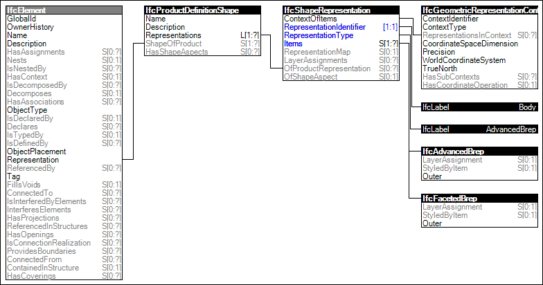

Link to this page
Link to this pageThe Body Brep Geometry is the representation of the 3D shape of a product by boundary representation models, including NURBS.
The following attribute values for the IfcShapeRepresentation holding this geometric representation shall be used:
Figure 80 illustrates an instance diagram.
 |
Figure 80 — Body AdvancedBrep Geometry |
Examples: